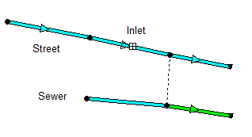

Some additional considerations when modeling inlets are:
| · | Conduits with inlets will be displayed on the Study Area Map with a symbol near their midpoint and show their downstream node connected to the inlet's capture node with a dotted line when the Map Option to display link symbols is turned on. |

| · | The rim elevations of nodes that receive captured inlet flow do not have to match the invert elevations of the end node of the conduit containing the inlet. |
| · | Two-sided street conduits (that are symmetric about the street crown) use pairs of inlets placed on each curb side of the street. |
| · | Multiple inlets of the same design can be assigned to a conduit (as pairs for two-sided streets). For on-grade placement the flow captured by each inlet is determined sequentially, so that the approach flow to the next inlet in line is the bypass flow from the inlet before it. |
| · | Flow captured by inlets is limited by the amount that its sewer node can receive before it floods. If the node has no such capacity remaining then any excess flow that would cause it to flood is sent back through the inlet and onto the street. |
| · | Users can stipulate whether an inlet operates on-grade or on-sag or have SWMM decide based on the slopes of the conduits adjoining it. (On-sag refers to a sump or low point that all adjoining conduits slope towards.) |
| · | Inlets can have a degree of clogging and a flow capture restriction assigned to them. |
| · | For Kinematic Wave and Steady Flow routing it is recommended that storage nodes be used at the end of inlet conduits that converge at sag points since otherwise any non-captured flow will simply exit the system. This is not necessary for Dynamic Wave routing as any non-captured water will create a backwater effect raising water levels in the adjoining street conduits. |